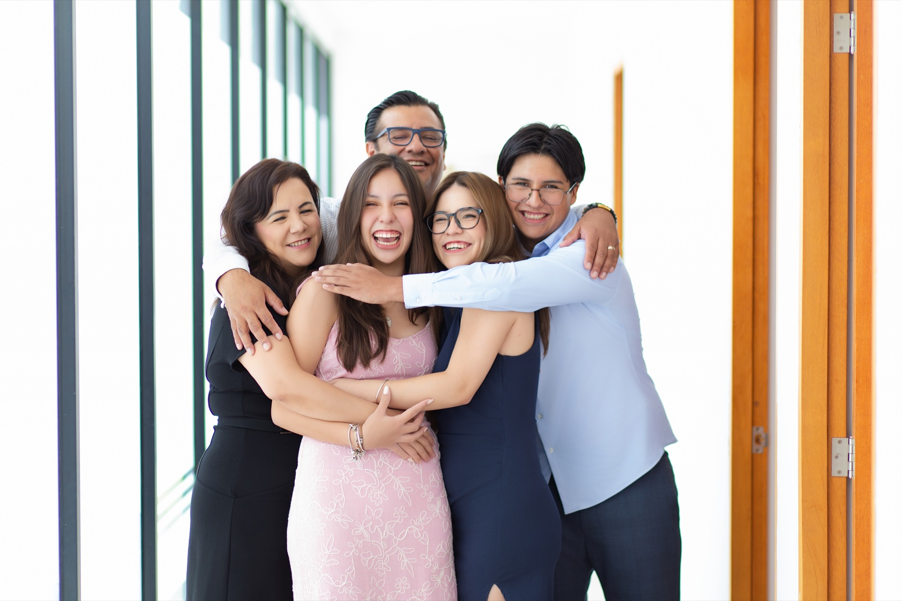

Mis XV años
Ana Isabela
Domingo 4 de octubre de 2026
“Celebramos a Isabela, cuya alegría, inteligencia y esencia vibrante hacen especial cada momento.”
Falta muy poco
Cuenta regresiva
00Días
00Horas
00Minutos
00Segundos
¡Hoy celebramos los XV años de Ana Isa!
Con la bendición de
Nuestra familia
Alma Nelly Enciso Villa
&Inocencio Menéndez Reyes

Una noche
para recordar
Celebremos juntos
Los detalles
Misa de acción de gracias
Parroquia de Nuestra Señora del Perpetuo Socorro
5:00 p. m.
Puente de Alvarado, esquina con Tabaqueros y Seminario, colonia Carretas.
Abrir en Google MapsRecepción
Salón VillaCONIN
Solar de Conín
7:00 p. m.
Te esperamos para compartir una noche inolvidable.
Abrir en Google MapsCódigo de vestimenta
Vestimenta formal
Hombres: traje.
Mujeres: vestido largo de noche.
El color rosa está reservado para la quinceañera.
Una celebración especial
Evento exclusivo para adultos
Para disfrutar plenamente esta celebración, hemos preparado un evento exclusivo para adultos.
Momentos
Ana Isa


Nos encantará verte
Confirma tu asistencia
Confirma tu asistencia antes del
14 de septiembre de 2026.